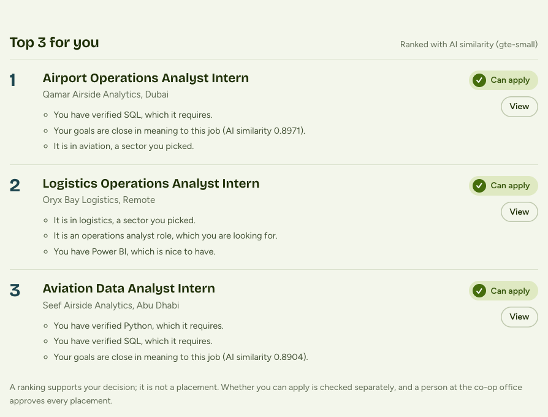
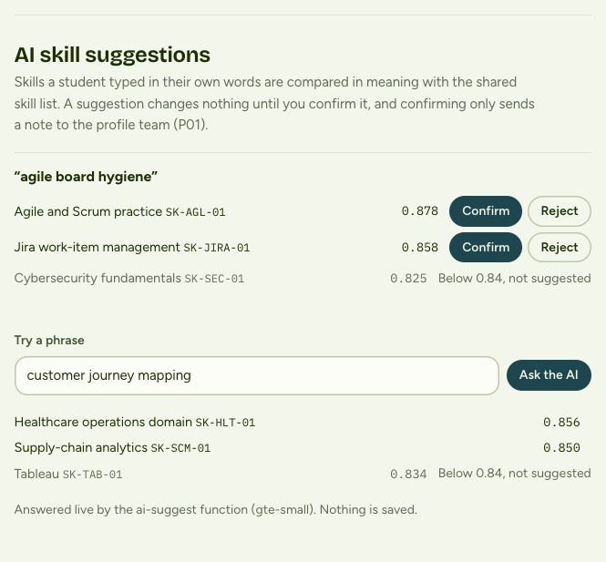

Student
I want my top 3 internships with plain reasons, so I know where to apply first.
BUS2010 co-op platform, Sprint 2 review · Team 5, project P05 · 17 November 2026
Real AI and live shared data, with the same plain answers.
Goal
Show each student which open internships fit and why, with AI that reads meaning, and never let the AI decide who can apply.
Success 1: the AI never changes who can apply
Measured: 0 changes across 36 student–job pairs.
Success 2: every AI result is labelled, every suggestion waits for a person
Model and method version on each result; the coordinator confirms.
Alghala Almansoori, Maha Abdulla, Che Liu, Leonard Jiang Mingming, Yonghan Yang
User stories
Student
I want my top 3 internships with plain reasons, so I know where to apply first.
Student
I want to see the one missing skill and send it to training, so I can unlock a job.
Coordinator
I want to confirm or reject each AI skill suggestion, so no profile changes without a person.
Partner team
We want one shared database with our own write key, so all seven modules use the same records.
1. goals We are Team 5, and our part of the co-op platform is P05, opportunity matching. In Sprint 1 the matching was rules only, and the “AI helper” was simulated word matching. In Sprint 2 we made the AI real and connected the prototype to live data that all seven teams can share. Our goal: show each student which open internships fit and why, using AI that reads meaning, while the AI never decides who can apply. We set two success criteria and both are measured: the AI changed eligibility in zero of 36 student–job pairs, and every AI result is labelled with its model and method, with every skill suggestion waiting for a person. On the right are the four user stories this sprint delivers.
CRISP-DM and PMI-CPMAI
1
Business understanding
Students write goals and skills in their own words; rules cannot read meaning. Success means the two criteria on slide 1.
2
Data understanding
390 student profiles, 178 open internships, 44 skill terms. Gaps kept visible: missing dates, unverified skills, 23 free-text skills.
3
Data preparation
One text per goal, internship and skill (its label plus synonyms), turned into 1,135 embeddings stored in the shared database.
4
Modelling · model development
Pretrained gte-small sentence embeddings and cosine similarity; thresholds set from 67,284 goal–job pairs. We trained nothing.
5
Evaluation
21 automatic checks, 30 labelled pairs compared with the rules baseline, and one failure traced to its cause.
6
Deployment · operationalization
Live in the prototype and a small cloud function; a person confirms every suggestion; each result stores its method version.
Phase 6 feeds back into phase 3: the wrong suggestion we found becomes a synonym fix in the data, not a new model.
Team 5, P05 Opportunity Matcher
2
2. crisp We followed the six phases that CRISP-DM and PMI’s CPMAI share. Business understanding: students describe what they want in their own words, and rules can’t read meaning. Data understanding: the shared database has 390 usable student profiles, 178 open internships and 44 skill terms, and we kept the messy parts visible, such as missing dates, skills nobody verified and free-text skills. Data preparation: one text per goal, internship and skill, turned into embeddings. Modelling: we did not train a model; we use the pretrained gte-small sentence model and cosine similarity, with thresholds set from the real score distribution. Evaluation: automatic checks plus a comparison with the rules on labelled pairs. Deployment: it runs in the prototype, a person confirms every suggestion, and every result records which method made it. The loop back matters: the failure we found is fixed in the data, not by changing the model.
Sample data and sources
400
students, with 808 profile versions
240
internships from 60 employers; 178 open
44
shared skill terms every team uses
616
applications with their status history
8,231
stored match results, each traceable
Where it comes from
The data contract in the group binder (P01 to P07), generated with a fixed seed. Layla Hassan and OP-028 are kept exactly as in the binder, with the eight data problems we test against.
Every person and company is invented. No real student data.
Missing or uncertain, on purpose
Dates left empty show as “cannot confirm”, never “no”. Skills a student lists are “unverified” until training checks them. Drafts newer than the submitted profile are ignored. 37 students wrote 23 skills in their own words.
Who may change what
Everyone reads everything. Each team writes only its own tables, with its own key; versions are added, never overwritten; nobody deletes. A sandbox lets teams practise.
Team 5, P05 Opportunity Matcher
3
3. data Our sample data now lives in one shared Supabase database that all seven teams can use: 400 students with 808 profile versions, 240 internships from 60 employers, 178 of them open, a shared list of 44 skill terms, 616 applications and over 8,000 stored match results. Everything is synthetic and follows the data contract in the binder; Layla and the Emirates aviation job are kept exactly as in the binder, together with the eight data problems we test against. We kept missing and uncertain information on purpose, because real data is messy: empty dates show as “cannot confirm”, skills a student lists are unverified until training checks them, and free-text skills stay unrecognised until a person confirms a mapping. Access is simple: everyone reads, each team writes only its own tables with its own key, versions are only ever added, and nobody can delete. This replaces Sprint 1’s private demo file.
Demonstration

Student: top 3 with reasons
Rules decide “Can apply”; the AI only reorders and adds a meaning-based reason with its score.

Coordinator: AI suggests, a person decides
Confirm or Reject sends a note to the profile team; the profile itself never changes here.
FAQ chatbot
Not built by P05: the lab notes let teams working on matching skip it. Which team builds it is for the Scrum of Scrums to confirm.
The working prototype and the code are linked on the last slide.
Team 5, P05 Opportunity Matcher
4
4. demo Live demo. On My matches, Layla’s top 3 internships, ranked with the AI method. Each comes with plain reasons, and one of them is new in this sprint: “your goals are close in meaning to this job”, with the similarity score. Whether she can apply is still decided only by the rules and shown separately; the AI can reorder within a group, never move a job into “Can apply”. Then the coordinator view: Arjun wrote “agile board hygiene” as a skill. The AI suggests Agile and Jira; the coordinator confirms or rejects, and confirming only sends a note to the profile team. Then I type a new phrase live, “customer journey mapping”, and you can see the AI get it wrong: it says Healthcare operations. That is exactly why a person decides. About the FAQ chatbot: the lab notes say a team working on matching does not have to build it, so P05 did not; the Scrum of Scrums should confirm which team does. If the live demo fails, these screenshots show the same states.
Test results and human safeguards
21/21
automatic checks pass
15/15
live database checks, incl. access rules
16/16
examples in the partner guide run
| On 30 labelled student–internship pairs | Rules | With AI |
|---|---|---|
| Top suggestion is labelled a good fit | 33% | 33% |
| Pairs in label order, full ranking | 71% | 71% |
| Pairs in label order, interest points only | 89% | 93% |
| Changed who can apply | – | 0 of 30 |
Tested with Layla, Arjun and Noura: the AI swapped one internship in each top 3 for one closer to their goal. The labels are provisional, written by Team 5 until a coordinator labels pairs; a gap of about 1.5 pairs is too small to call the AI better.
One failure we found
“customer journey mapping” → Healthcare operations, 0.856. Wrong: it means UX research.
Corrective action
The coordinator rejects it. Next: add “customer journey” to UX research’s synonyms and run the comparison again.
Human review steps
The coordinator confirms every skill suggestion. P01 decides whether a profile changes. P06 verifies skills. The co-op office approves every placement.
Team 5, P05 Opportunity Matcher
5
5. tests What we tested. 21 automatic checks pass, including three new ones for the AI: it never changes who can apply, it always says which model produced a score, and its skill suggestions never count as a requirement. 15 checks run against the live database, including the access rules: a team cannot write another team’s tables, versions cannot be overwritten, nobody can delete. Every example in the guide for other teams was run against the live data. We tested three students by hand: in each case the AI swapped one internship in the top 3 for one closer to the student’s goal. On 30 labelled pairs the AI orders interests slightly better, 93 against 89 percent, but that is about one and a half pairs, and the labels were written by us as a stand-in for a coordinator, so we do not claim the AI is better. The failure: “customer journey mapping” was matched to healthcare operations. The correction is a person rejecting it and a synonym fix in the data. People stay in charge at four points: coordinator, P01, P06 and the co-op office.
Scrum of Scrums, backlog and next steps
Scrum of Scrums
We offer every team the shared database: an ownership map of 24 tables, one key per team and a guide with 16 tested examples. To agree at the next SoS.
Backlog updates
Added: shared-data integration, AI skill suggestions with a confirm step, coordinator-labelled pairs. Done: the real AI method.
Since Sprint 1
Sprint 1’s simulated helper and private demo file are gone. The same checks, now 21, still pass on live data.
Sprint 3
A coordinator labels 20 or more pairs; synonym fix and re-run; joint test with P06 through the database; three classmates try it.
Prototype thecyper.github.io/bus2010-p05-opportunity-matcher
Code github.com/TheCYPER/bus2010-p05-opportunity-matcher
Questions?
6. next Coordination. The shared database is ready for every team: each team owns its tables, gets its own write key, and has a guide whose examples we ran against the live data. We will propose it at the next Scrum of Scrums; the other teams have not agreed to it yet. Backlog: we added stories for shared-data integration, for AI skill suggestions with a confirmation step, and for coordinator-labelled pairs; the real AI method is done. Continuous improvement since Sprint 1: the simulated helper and our private demo file are gone, and the same checks still pass on live data. Next sprint: a real coordinator labels at least 20 pairs so the comparison means something, we fix the synonyms the failure showed and run it again, we test the skill-gap handoff with P06 through the database, and three classmates who did not build it try the prototype. The prototype and the code are at these two links. Thank you; happy to take questions.